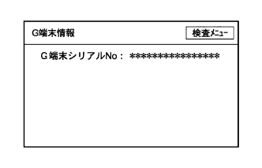
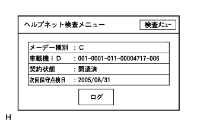

).
).G-BOOK System Diagnosis System |
).Start diagnosis (see)
Diagnosis Cancellation (see)
 |
G Terminal Information
Start diagnosis and display the diagnosis inspection menu screen.
Select "G Terminal Information" on the diagnosis check menu screen to display the G terminal information screen.
Check the G-BOOK terminal information.
| Display | Meaning |
|---|---|
| G Terminal Serial No. | Reads and displays the G-BOOK terminal serial No. held by the navigation receiver assembly (G-BOOK terminal ID) |
 |
HELPNET Inspection Menu
Start diagnosis and display the diagnosis inspection menu screen.
Select "HELPNET Check" on the diagnosis check menu screen to display the HELPNET check menu screen.
Check the content.
| Item | Display Content |
|---|---|
| Mayday Type | Displays the type of HELPNET in-vehicle unit installed ("C (one-touch type)" is displayed on this model) |
| In-vehicle Unit ID | Displays the ID of the installed HELPNET in-vehicle unit |
| Contract Status | Displays the HELPNET service contract status as follows
|
| Next Maintenance Check | Displays the next automatic maintenance check date |